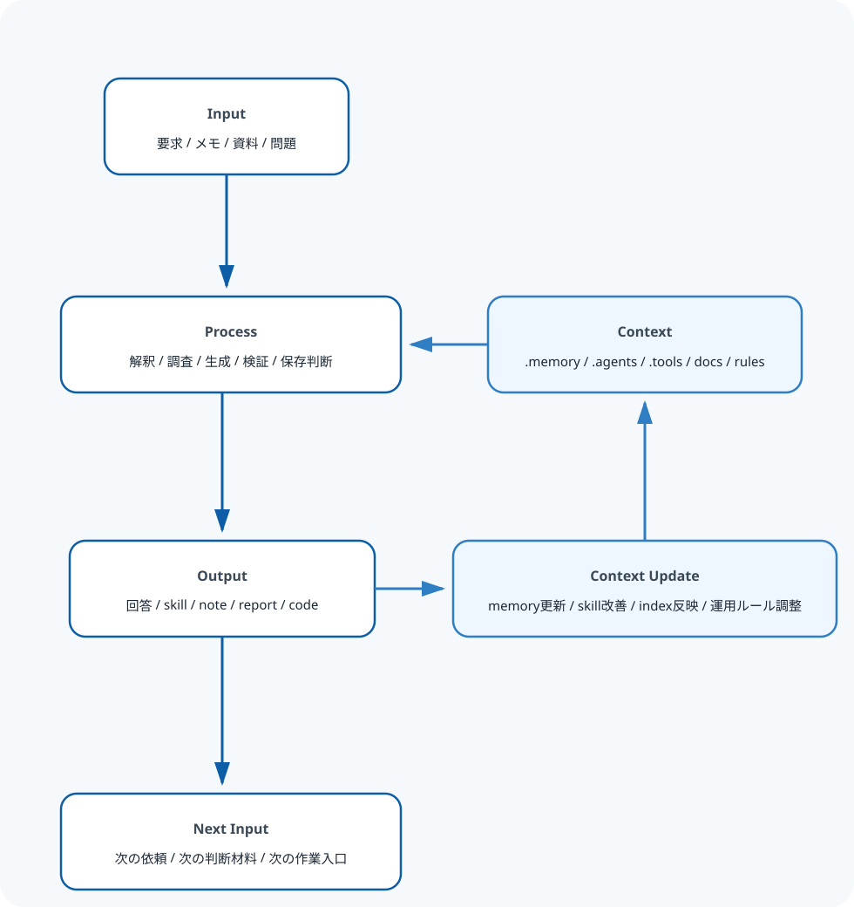

.agents
スキル本体、置き方の規約、テンプレート、スクリプトを置く層です。
Project Detail
agent-skill-hub`agent-skill-hub` は、agent skill の作成、運用、成果物管理を一元的に行う個人プロジェクトです。 単なる prompt 集やメモ置き場ではなく、会話、ノート、スキル、補助ツール、成果物を同じ場所で循環させ、 次の思考条件や作業条件を改善していく基盤として育てています。
このページで紹介している内容の source of truth は private な agent-skill-hub にあります。
公開時はその中の public-site/ で内容を選別し、公開用 mirror である
agent-skill-hub-public へ同期して GitHub Pages で配信しています。
Why
AI を単発の出力生成で終わらせず、次の思考条件や作業条件を改善する存在として扱いたいという問題意識が起点です。 painful な作業を構造化、標準化、自動化で軽くするという、自分の仕事観を実験し続ける場でもあります。
Concept
このプロジェクトの中心には、`入力 -> 処理 -> 出力 -> 文脈更新` のループを継続的に改善するという考え方があります。 出力そのものだけでなく、次の処理条件を良くする `Context Update` を重視している点が特徴です。

Repository Design
.agentsスキル本体、置き方の規約、テンプレート、スクリプトを置く層です。
.memory圧縮済み、抽出済み、再利用前提の知識、継続ノート、ガイドを置く層です。
workspace人が直接触る作業領域、成果物、アーカイブを置く層です。
public-siteprivate repo から明示的 export した公開用 staging です。
agent-skill-hub-publicpublic-site/ の内容だけを同期する公開用 mirror で、GitHub Pages の配信元です。
Meaning
Positioning
Links